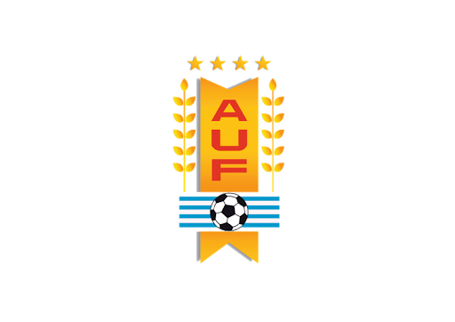

El 30 de marzo de 1900 se fundó la Uruguay Association Foot-ball League, actual Asociación Uruguaya de Fútbol, con el fin de organizar el fútbol en el país y sus campeonatos.
Fue a iniciativa del dirigente de Albion Enrique Lichtenberger quien convocó solamente a tres instituciones más: Central Uruguay Railway Cricket Club, Uruguay Athletic y Deutscher Fussball Klub.
Dicha asociación organizó el primer Campeonato Uruguayo de Fútbol ese mismo año, el cual fue obtenido por el Central Uruguay Railway Cricket Club.

Al filo del siglo XX, y a través de diversos agentes el fútbol empezó a llegar al resto del país. Por medio de los obreros del ferrocarril, residentes británicos y centros de enseñanza, junto con la visita de conjuntos montevideanos.
De esos años son el San José Football Club (1900), Guadalupe en Canelones (1901) Mercedes Football Club (1902)y Club Atlético ideal de santa rosa(1904).
El club más antiguo del fútbol del interior hoy vigente es el Melo Wanderers Football Club.